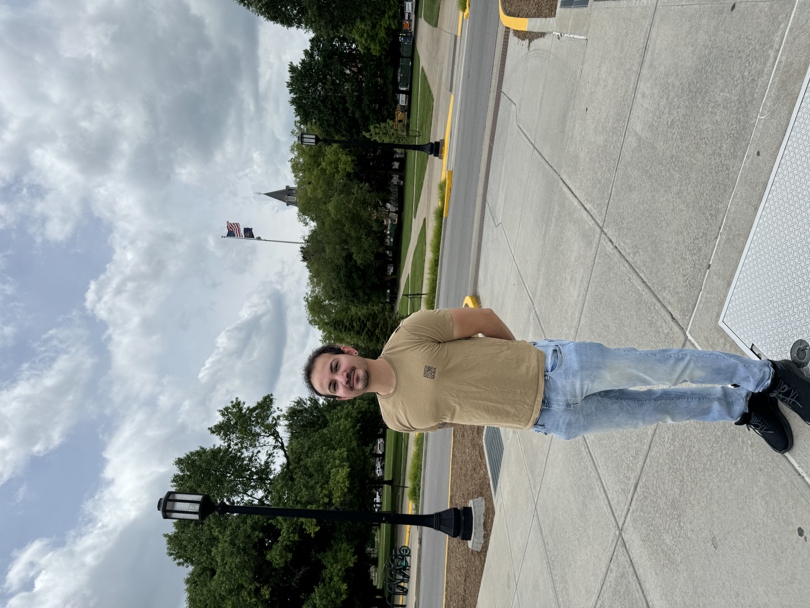

I'm a trilingual marketing and communication professional with a diverse background in both the United States and Brazil. I’ve interned at Lew’Lara\TBWA working on digital campaigns like Swift Loves Travis and Piraquê's Maltadão with Ludmilla. I served as a Student Ambassador at IUPUI and was involved in a political campaign in Indiana, bringing a strong combination of strategic communication and public engagement. I love blending creative design with purposeful storytelling.
Purdue University – Master of Science in Communication (Expected 2025)
IUPUI – Bachelor of Arts in Political Science (2024)
Dean’s List, GPA: 3.83
Ivy Tech Community College – Technical Certificate, General Education (2022)
Merit Scholarship Recipient
Email: cordeirolucas4@gmail.com
Instagram: @luccascrdm